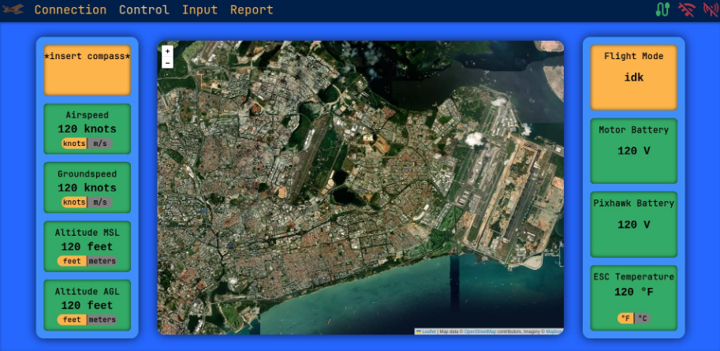
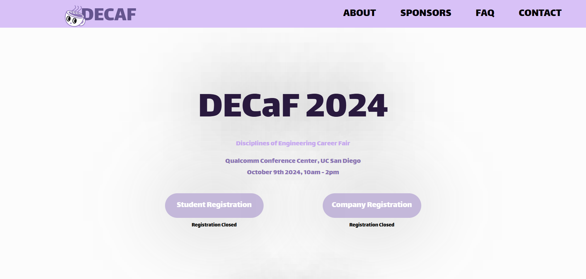

Houston : Ground Control Station Frontend
The frontend of our ground control station, Houston, is a React web app for monitoring and adjusting plane parameters during flight. It tracks connectivity, telemetry (altitude, battery voltages, airspeed), and image data, allows in-flight camera adjustments, and facilitates mission parameter input and waypoint uploads. I designed and developed the UI for the Controls Page and the Report Page, and integrated the backend for the Report Page.
Guided Payload
The guided payload is crucial to our macro UAV project. It features an autonomous self-guided TPU housing with a small water bottle inside, released mid-air from under the UAV's wings.
It is powered by a 2S Li-Po battery, an ESP32 microcontroller, a BN880 GPS/Compass module, 2 servos, and a Proportional Control Algorithm. The housing is attached to the parachute with strings, and steering strings connect to a custom 3D-printed servo arm on either side.
The servo pulls on the strings to steer the parachute, ensuring the payload is safely and accurately dropped onto the target.
Stock Predictor
I developed a Convolutional Neural Network (CNN) using Python and Tensorflow to predict the short-term behavior of stocks with a remarkable 71% accuracy.
This project involved implementing sophisticated data preprocessing techniques to clean and normalize stock market data, ensuring the model's performance was both optimal and generalized. By utilizing convolutional layers, the CNN could automatically learn and extract relevant features from historical stock price data, significantly enhancing its predictive capabilities. To further boost accuracy, I optimized the model's hyperparameters using the Keras Hyperband Tuner, which fine-tuned the network efficiently.
The trained CNN model was then integrated into a trading system for automated decision-making. Extensive backtesting was conducted to evaluate its effectiveness, demonstrating promising results and potential for real-world application in automated trading strategies.
Snake AI
This project uses reinforcement learning to enable the model to learn from its environment and improve its performance over time. I set the agent to be the snake, the positive reward to be the food, the negative reward to be hitting itself, and the environment to be the playable space.
The model's ability to learn and adapt led to increasingly efficient gameplay, showcasing the potential of reinforcement learning in developing intelligent and adaptive systems. This project not only highlighted the versatility of PyTorch but also illustrated the practical applications of reinforcement learning in gaming and beyond.
Personal Portfolio Website
I developed this website to showcase my skills and projects as a developer. Built using HTML, CSS, and JavaScript, the site features interactive elements and highlights my UI design style, which is also reflected in my other projects, like Houston. Each project includes detailed descriptions, technologies used, and links to public GitHub repositories when available, offering visitors a comprehensive view of my work.
CSE 151A: NBA Odds Analysis
UCSD's CSE 151A is an Introduction to Machine Learning course that teaches the fundamentals and principles behind some commonly used machine learning algorithms. Our project in NBA sports analysis focuses on predicting key metrics such as money lines, totals, spreads, second-half totals, and scores using advanced machine learning techniques.
By leveraging NN, RNN, and CNN models trained on a detailed NBA dataset, we aim to decipher public sentiment toward team strengths. These predictive models offer insights into which teams are favored in upcoming games and to what extent, shedding light on how public perceptions influence betting odds. This study provides a deep dive into sports analytics, revealing the intricate relationship between public sentiment and predictive modeling in NBA games.
DECaF 2024 Website: decafucsd.com
As the Co-President of Triton Engineering Student Council(TESC), I coordinated logistics for the Disciplines of Engineering Career Fair (DECaF), reaching 350+ attendees providing career opportunities for students. I designed the UI, and developed the website for DECaF from scratch using Figma, and React TS.
last updated: 10 Jun 2025

|

|